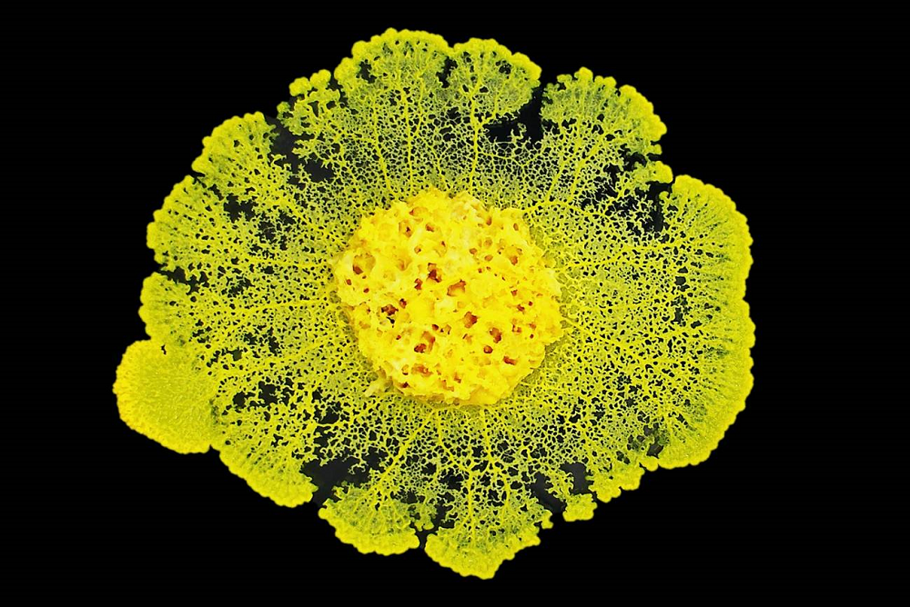

Home > Chronicles of a biblio-naturalist > Biomimesis in Action (06)
Biomimesis in Action (06)
The Organism with No Body
Slime molds and temporary intelligence
The Dream of Permanent Organization
Knowledge systems usually treat organization as something that must be built before coordinated work can begin. Catalogues, repositories, databases, and projects all depend on structures that assign roles, shape procedures, regulate authority, and direct communication. Once established, however, those arrangements tend to endure beyond the circumstances that produced them. Committees outlive their original tasks, categories continue after their usefulness has weakened, and platforms keep governing work because replacing them has become too costly or disruptive.
This preference for durable organization is understandable. Stable structures allow responsibilities to be assigned, decisions to be documented, and work to continue beyond the participation of particular individuals. Without some persistence, every problem would require the institution to invent itself again.
But permanent structures carry their own danger. They can become detached from the conditions they were designed to address. A classification created for one collection begins governing another. A workflow built during an emergency becomes normal procedure. A temporary database acquires dependencies, users, and authority until nobody can close it. The institution gradually spends more effort maintaining its arrangements than responding to the world those arrangements were meant to serve.
Fragile knowledge systems often confront a different difficulty: they cannot assume that the organizational conditions supporting one period of activity will still exist when work resumes. Changes in staff, funding, custody, technical capacity, or institutional affiliation can alter the system between one phase and the next, leaving structures designed for an earlier moment poorly suited to the circumstances in which they must later operate.
Under those conditions, coordination cannot always depend on preserving a stable organizational body. It may need to arise around a problem, change while the problem is being addressed, and recede when its work is complete.
The slime mold Physarum polycephalum gives this possibility an extraordinary physical form. It is not literally an organism without a body. It is, during its plasmodial stage, one enormous cell containing many nuclei. Yet it has no fixed body plan, no brain, no nervous system, and no permanent arrangement of organs. It continually extends, divides, reconnects, thickens, and withdraws as it moves through its environment.
It does not carry a stable structure into the problem. Its structure emerges while the problem is being solved.
A Body That Refuses to Stay Put
Physarum polycephalum is neither a plant, an animal, nor a fungus. In its visible foraging stage, it may appear as a yellow mass spreading across damp wood, leaf litter, or a laboratory surface. Its body forms a shifting network of fronts, sheets, and vein-like tubes through which cytoplasm moves.
Those tubes are not permanent anatomy. They appear, strengthen, weaken, and disappear according to the organism's circumstances. When food is available in several places, the slime mold extends toward it and establishes connections between resource points. Routes carrying more internal flow may become thicker. Less useful branches are gradually abandoned. The resulting network changes as food is consumed, obstacles appear, humidity shifts, or new opportunities become detectable.
In laboratory experiments, slime molds placed within mazes have spread through available passages and later withdrawn from dead ends, leaving an efficient connection between food sources. The result can resemble a calculated route, although no internal map, central controller, or symbolic calculation has been found. The path emerges through the organism's changing distribution of matter.
Calling this "intelligence" requires care. The slime mold is not contemplating alternatives, representing the maze internally, or reasoning in the human sense. Its accomplishment is narrower and stranger: it integrates information from different parts of its environment and alters its behavior in ways that improve access to resources.
The organism does not solve the problem and then reshape its body according to the answer. The reshaping is the solution.
The Problem Is Solved in the Shape
Human institutions usually separate intelligence from infrastructure. People make decisions; systems execute them. A committee chooses a route; a platform carries the information. A cataloguer develops an interpretation; the record preserves its result. Organizational form appears as the container within which thought occurs.
The slime mold offers no such division.
Its tubular network senses, transports, compares, and acts at the same time. The routes through which information moves are also the routes through which nutrients circulate and the body itself advances. When those routes change, the organism's capacity to respond changes with them.
This makes the slime mold especially useful for thinking about unstable knowledge systems. Its intelligence does not reside in a permanent center that commands an adaptable periphery. It is produced across a temporary arrangement whose parts continually affect one another.
A dense exploratory network appears first. Many pathways remain possible. As the environment begins to exert pressure, some connections carry more flow and become reinforced, while others receive less and shrink. The organism moves from broad exploration toward a more economical configuration without requiring a separate planning stage.
The early network is not a failed version of the later one. Its apparent excess is what allows alternatives to be encountered. A system that formed only the final efficient path would need to know the answer before it began.
Exploration therefore requires temporary redundancy. The organism spends matter on routes that may later disappear. Those abandoned branches are not necessarily mistakes: they are part of the process through which the surviving structure becomes possible.
Knowledge systems often distrust provisional excess because it resembles disorder before its purpose becomes visible. Categories developed for testing, overlapping descriptions, duplicated working files, and experimental workflows are therefore judged against standards intended for finished systems. Institutions may demand consistency too early, forcing a final structure into place before the exploratory work has produced enough evidence to justify one.
The slime mold reverses that sequence. It creates possibilities first and allows use, resistance, distance, and changing conditions to reorganize them. Its temporary body is a field of hypotheses.
Coordination Through Flow
Without a brain or nervous system, how does one part of a slime mold affect another?
The plasmodium undergoes rhythmic contractions. Its tube walls tighten and relax, driving cytoplasm back and forth through the network. These flows distribute nutrients and chemical signals across the organism. A local encounter with food alters contraction patterns near the stimulus, and the resulting effects propagate through the wider body.
Experiments and models suggest a feedback process: a stimulus changes local contraction and flow; internal flow transports signals; those signals influence further contractions; and the organism's network gradually reallocates mass toward advantageous areas. Coordination emerges through the circulation that the network itself produces.
There is no obvious command point instructing each tube to thicken or withdraw. Local responses become connected because they alter a shared moving medium. Information travels through material changes that affect what the organism can do next.
The body is therefore neither passive infrastructure nor a fixed communication channel. It participates in interpretation. Its current shape influences which signals travel easily, which regions exchange material, which routes receive reinforcement, and where further growth becomes possible.
Previous decisions become embedded in this shape. A thickened tube makes later flow through the same route easier. A withdrawn branch reduces the likelihood that the abandoned region will continue influencing the whole. The organism's history remains present as unequal capacities for future movement.
Research on Physarum also suggests that oscillatory dynamics may contribute to the coordination of sensing, movement, and adaptive behavior. The organism's network is a continuous material rather than an assembly of neurons, yet changing patterns of contraction can spread local information and produce organism-wide responses.
Its temporary intelligence is thus inseparable from circulation. Coordination occurs because local events are allowed to modify the flows connecting the whole.
Temporary Structures for Knowledge Work
Fragile knowledge systems often need forms of coordination that can be assembled without becoming permanent institutions.
A small archive confronted with a damaged collection may need conservators, community custodians, translators, cataloguers, and technical workers to coordinate for several months. A migration project may require a temporary vocabulary that maps relationships between two incompatible systems. A dispersed research collection may need a provisional inventory linking materials held by several people. A language documentation project may create a restricted working structure through which speakers, researchers, and archivists can review recordings before any long-term repository is chosen.
These arrangements may be essential without needing to survive in their original form.
The usual institutional instinct is to stabilize them. The working vocabulary becomes a standard. The emergency committee becomes an office. The provisional database becomes the official repository. The temporary access procedure becomes policy. Stabilization can protect valuable work, but it can also preserve structures that were shaped by conditions no longer present.
The slime mold suggests another possibility: maintain the capacity to organize without requiring every organization to become permanent.
Such systems would distinguish between the continuity of a function and the continuity of the structure currently performing it. Description must continue, but a particular descriptive arrangement may not. Custodial responsibility must remain identifiable, but the same committee need not exist forever. Materials must remain findable, but the temporary interface built during a project may be allowed to disappear once its contents and logic have been transferred elsewhere.
This requires structures designed for transformation from the beginning. Temporary systems need exportable records, documented decisions, clear scopes, named responsibilities, and explicit conditions for closure. Their products must be capable of entering other arrangements without carrying every dependency of the structure that produced them.
A temporary working group should leave more than meeting minutes and exhausted participants. It should preserve what problem it addressed, what evidence it considered, what decisions it made, what uncertainties remain, and who is responsible for consequences that continue after the group dissolves.
A provisional vocabulary should indicate where its terms came from, why they were used, what they failed to represent, and whether they should retain authority after the immediate task ends.
A temporary database should be able to surrender its contents without demanding eternal maintenance as the price of access.
Temporary intelligence is not improvisation without memory. It is coordination that can release its present form without losing the knowledge produced through it.
When the Network Must Disappear
Institutions are often better at creating structures than ending them. Closure can be interpreted as failure, loss of influence, or admission that the original design was inadequate. Projects therefore continue in weakened form. Platforms remain online without real maintenance. committees meet because they have always met. Working categories survive because removing them would require explaining what should replace them.
The slime mold does not treat every successful connection as a permanent achievement. A tube may be useful while it carries material between active regions. When the distribution of resources changes, maintaining that tube may become costly. The organism withdraws from it and reallocates its matter elsewhere.
The abandoned route is not necessarily preserved as an empty structure. Its material returns to the organism's changing body.
Knowledge systems cannot simply absorb their obsolete arrangements so elegantly. Platforms leave file formats, contracts, URLs, permissions, and technical dependencies behind. Committees leave unresolved responsibilities. Classification changes affect records already produced. Closing an access route may isolate users who depended on it.
Yet the principle remains useful. A structure that once supported coordination should not become immortal merely because ending it is difficult.
Designing temporary intelligence therefore includes designing disappearance. Before a structure is created, the system should know what must happen when it is no longer useful. Which records will remain? Which decisions must still be enforceable? Which responsibilities continue? Where will the materials go? How will users be redirected? Who can decide that the structure's task has ended?
The aim is not constant organizational fluidity. People cannot work responsibly inside systems that change shape every morning. Continuity, predictability, and durable accountability remain necessary. The more precise aim is to prevent stability from becoming the only recognizable form of competence.
Some problems need institutions. Others need temporary bodies capable of concentrating attention, connecting distant knowledge, exploring alternatives, and then giving their resources back.
The Danger of Temporary Intelligence
Temporary organization has an attractive flexibility. It can also become a polished name for precarity.
Institutions routinely create short-term projects to perform work that actually requires lasting commitment. Temporary staff build collections they will never be employed to maintain. Community participants contribute expertise to advisory groups that disappear before their recommendations are implemented. Grant-funded infrastructures collapse after producing public visibility for the institution that hosted them. Responsibility is distributed during the work and nowhere to be found afterward.
The slime mold cannot justify any of this. Its changing network belongs to one organism. Human knowledge systems contain people and communities with distinct rights, needs, histories, and degrees of power. They are not interchangeable regions of a single body. One participant cannot ethically be drained so that another part of the network becomes more efficient.
Nor is the route carrying the most activity automatically the best route. Repeated use may reflect convenience, institutional authority, technical privilege, or the exclusion of alternatives. A classification becomes heavily used partly because everything has already been forced through it. A repository attracts further deposits because it possesses resources denied to local custodians. A dominant language accumulates documentation while smaller languages become increasingly difficult to support.
Reinforcement can produce adaptation. It can also reproduce inequality. A temporary system therefore needs governance even when it lacks central command. Someone must remain answerable for how the problem was framed, which signals were recognized, whose participation was possible, which routes were strengthened, and what was allowed to disappear.
A network that can dissolve its structure must not dissolve its obligations.
What the Slime Mold Does Not Solve
Physarum polycephalum offers no organizational blueprint. A slime mold forages for nutrients. A library, archive, museum, or community memory project must negotiate access, consent, labor, authority, interpretation, privacy, ownership, harm, and historical injustice. As usual in biomimicry, biological efficiency cannot decide these questions.
The shortest connection may be ethically unacceptable. The strongest signal may come from the most powerful actor. The most frequently used pathway may lead repeatedly through the same extractive institution. A redundant route may need to remain available because it protects community control, linguistic difference, or political safety.
The slime mold also does not prove that central institutions are unnecessary. Its own coordination depends on organism-wide flows and physical continuity. Many knowledge systems are separated by geography, infrastructure, distrust, legal restrictions, or incompatible purposes. They may need explicit agreements and durable authorities precisely because no shared body joins them.
The comparison becomes valuable only at a narrower scale. It shows that adaptive coordination does not always require a fixed organizational form. It demonstrates how sensing, circulation, memory, and action can be distributed across a structure that changes while it works. It reveals that exploration may require temporary excess, and that successful organization may eventually need to surrender the form through which it succeeded.
Above all, it separates intelligence from permanence.
The Organism with No Body
The slime mold has a body, but no final one. Its form is assembled from present conditions: food, distance, moisture, obstacles, previous movement, and the flows passing through its own tubes. It explores by extending itself, compares possibilities by living through them, and concentrates its activity by withdrawing from routes that no longer contribute.
The resulting intelligence belongs neither to a central organ nor to a stable architecture. It appears in the temporary coordination of the whole.
Fragile knowledge systems may need a comparable capacity. They cannot always preserve the committees, platforms, categories, workflows, and institutional arrangements through which every problem was once addressed. Nor should they. Some structures deserve continuity. Others should leave their decisions, records, and responsibilities behind and relinquish the resources they occupy.
The challenge is to preserve the capacity for coordinated thought when the body that once performed it cannot remain.
The organism with no body is really an organism with no permanent body. Its intelligence survives because it knows how to form one, use it, change it, and let it go.